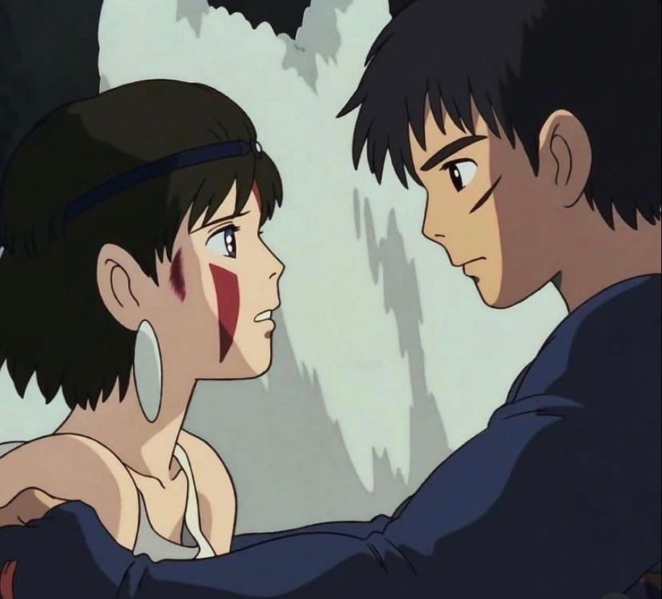

🏠
inbox: 5📨
fofura post bonus🥐

@_ghibli_1
ARTICLES
📄
Como foi assistir Cardcaptor Sakura pela primeira vez em 2023
Cardcaptor Sakura: Clear Card Manga termina em 1º de dezembro
The Mandalorian: Qual o futuro de Star Wars depois da temporada 3?
Ahsoka: entenda o final da série e o que esperar do futuro de Star Wars
Mark Hamill marca aniversário de Carrie Fisher com fotos de Star Wars
Stranger Things - David Harbour recebeu ligação 10min após o fim da greve
Astro da série Stranger Things debocha de palestinos: "sionismo é sexy"
Kimi ni Todoke - Após 12 anos, 3ª temporada é anunciada
A Fuga das Galinhas: A Ameaça dos Nuggets ganhou o seu trailer final
NASA: galáxia Andrômeda e alpes suÃços na foto astronômica do dia
Emma Goldman – Casamento e Amor
The Ink Spots - We Three
última atualização, novembro de 23


 última atualização, novembro de 23
última atualização, novembro de 23